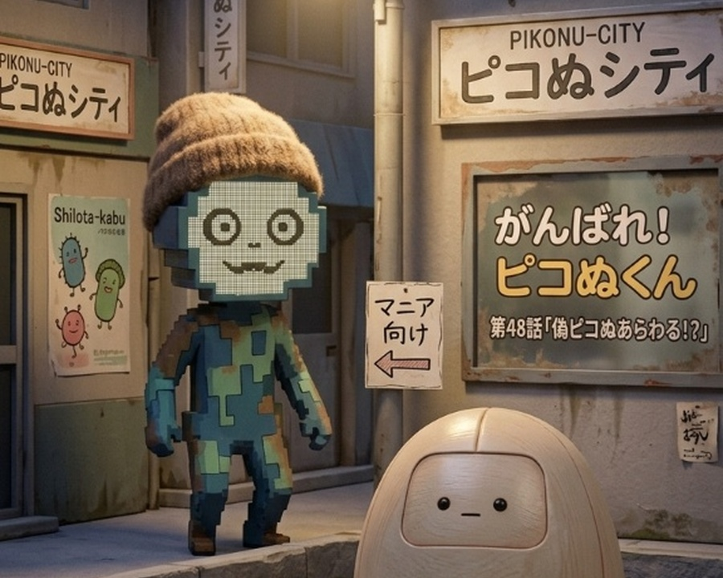

ぬかピコケーブルテレビは、市が自主制作する市民限定チャンネルです。視聴には 市内ケーブルテレビへの加入、またはオンライン配信での住民登録(市民カードの 提示)が必要です。市外の方はご視聴いただけません。
週間番組表
番組紹介
がんばれ! ピコぬくん

アニメ形式のご当地ヒーロー番組です。ピコぬくん(本人)が案内役を務め、 商店街や市内各所を舞台にしたコントが1話につき2本、日替わりで放送されます。 現在は第42話まで放送予定が決定しており、次回は「おじさん、自動ドアの前で ぴたっと止まるの巻」「胃腸を整えろ! ピコタ株大作戦の巻」の2本立てです。
テーマ曲「自動ドアの前で」
作詞・作曲:ピコぬくん / 編曲:ピコぬ市職員一同
歌詞を見る
Oh yeah! 街角の灯りが滲んで 自動ドアの前で立ち尽くす デジタルな視線が突き刺さる 胃腸が軋む午後のロードショー ピコタ株に未来を賭けて ああ、ピコぬくん! (がんばれ! がんばれ!) 進め! ピコぬくん! (がんばれ! がんばれ!) 僕らの明日のために ピコぬくん!
撮影現場には、一般公開されていない資料や過去のセットが残っていることがあり、 現場付近には「マニア向け」の案内が掲示されている場合があります。番組の コアなファン以外は特に気にせず読み進めて構いません。
ピコぬか!

未就学児から小学生を対象にした、市民限定の子供向け番組です。市内の日常を 紹介するミニコーナーのほか、工作コーナー「ぬかピコをつくってみよう!」を 毎回放送しています。
「ぬかピコ」の正確な姿は、これまで誰も見たことがありません。番組では その前提のまま、画用紙・粘土・不要不急保存課から提供された廃材などを 使い、子供たちがそれぞれ自由にぬかピコを作ります。正解や審査はなく、 毎回まったく異なる姿のぬかピコが生まれています。
ぬか漬けの極意

今回で第269回を迎える、市内でもっとも長く続く料理番組です。10分程度の 調理コーナーですが、毎回のように話題が脱線し、ぬか床の話から始まって 別の話題で終わることも珍しくありません。歴代パーソナリティは6代を数えます。 原作にあたる書籍「ぬか漬けの極意」も、市立図書館にて所蔵しています。
効率化しない30分

時間効率支援課が提供する番組です。特定のテーマや実況はなく、市内のどこかで 誰かが何もしていない30分間を、ただそのまま放送しています。ナレーションは 入りません。